|
Religious Shrines in Iraq
|
- Religious Shrines in Baghdad
- Religious Shrines in Al-Najaf
- Religious Shrines in Karbala
- Religious Shrines and Mosques in Babil
Religious Shrines in Baghdad |
| Al-Kadhimiya Mosque: It is a famous shrine in Baghdad, located in Maqabur Quraysh (Quraysh Cemetery). It contains the tombs of Imam Musa al-Kadhim, who was buried in (802 AD), and Imam Mohammed at-Taqi. Around the two tombs, was built a large mosque currently overtopped by golden two domes and four minarets. This mosque was erected in (1515 AD). | 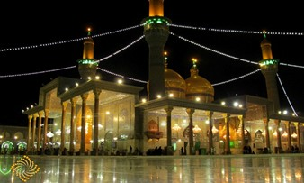 | Imam Abu Hanifa Mosque: This mosque is located in al-Adhamiya section, surrounding the tomb of Imam Abu Hanifa (Nu’man ibn Thabit al-Kufi, founder of the Hanafi School of Fiqh) who was buried in Maqabur al-Khaizuran (al-Khaizuran Cemetery) in (105 AH / 767 AD). Around the shrine, the small town of al-Adhamiya was originated. In (459 AH / 1066 AD), the building was restored by Sharaf al-Mulk Abu Sa’id al-Khwarizmi during the reign of Seljuq, who built over it a big dome, and the place was called Abu Hanifa Shrine. Also he built, next to it, a Hanafi school. The building was subject to demolition and alteration throughout the time, but was frequently rebuilt by the Ottoman Sultans and Walis. | 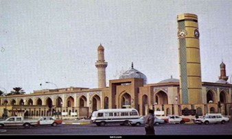 | Buratha Mosque: Buratha, in ancient Syriac, means “Son of Wonders”, “House of Maria” or “Land of Jesus”. Buratha Mosque is a holy shrine glorified by both Christians and Muslims equally. It is considered one of Baghdad’s oldest mosques in the Islamic History, going back to a hundred eight years before the establishment of the Abbasid capital. It is said that Buratha was a monastery for the Christians wherein a solitary priest, named Habbar, lived. He embraced Islam and moved with Amirol Mo’minin Ali to al-Kufa, the capital of Islamic Caliphate. The monastery was converted into a mosque, renowned later as Buratha mosque. This is happened when the Imam passed over this place, in 37 A.H., and stayed there for four days; as he returned from al-Nahr Battle, accompanied by his two sons (Hasan and Husayn) and around a hundred thousand comrades. He, by his blessed hand, extracted from a place there a solid black colored rock; then clear water, more delicious than cream, sweater than honey, welled up out of there. Thereafter it was changed into a well. People, until now, seek cure from it and from the rock itself, by taking water from the well and pouring it in a hole found, just like a vessel, on the surface of the rock, and then ladling it and serving it to the ill people and children of speech delay, who will cure and the knots of their tongues will loosen if they drink from that holy water, due to the blessings of that rock, the dignity of he who extracted it and the will of the Supreme, Mighty God. Many persons tried this by themselves and the results were more than wonderful and astonishing; the child who could hardly pronounce a word, now speaks fluently, tactfully and even more intelligently. | 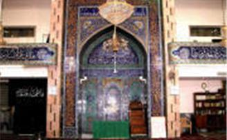 | Shaikh Abdul-Qadir Gilani Mosque: It includes the tomb of Shaikh Abdul-Qadir Gilany, and is located in Babel-Shaikh section, formerly known Babel-Halaba district. This shrine originally was a school built by the Hanbali Abu Sai’d al-Mubarak bin Ali al-Makhzumy, restored and expanded thereafter by his disciple Shaikh Abdul-Qadir Gilany who founded teaching circles and lived solitarily in it until 561 AH / 1165 AD. He was buried there. Ottoman Sultan Sulaiman al-Qanuny built an elevated wide dome over the tomb, and attached many facilities thereto. | 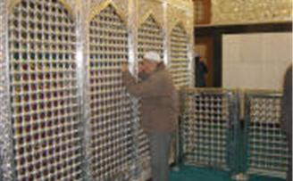 | Al-Khulafa’ Mosque: It is located in the middle of al-Khulafa’ St. in al-Shorja, where you may see a new mosque adorned by a his torical minaret which is a part of Darel Khilafa Mosque (House of Caliphate Mosque) or Jami’ al-Qasr (al-Qasr Mosque). The said mosque was built by the Abbasid Caliph al-Muktafi during (289 – 295 AH / 902 – 908 AD). The minaret existing therein today dates back to (678 AH / 1289 AD). Yet there are older minarets built by Iraqi architect in (479 AH / 1086 AD and 670 AH). The minaret height is (33 m) above surface with its (12 sided), (20.64 m circumference, base). | 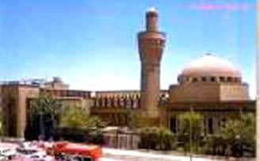 | Zumurrud Khatoon Dome: It is located to the west of Baghdad, in Shaikh Maroof district, overtopped by an elevated dome stands on eight sides. Zumurrud Khatoon is the wife of the Caliph al-Mustadhi’. She built it, so that it would be buried there, during the reign of her son, the Caliph Al-Nasir li-Din Allah. It was built in (599 AH / 1202 AD). This tomb is falsely called the Tomb of Sit Zubaida, the Abbasid Caliph Harun Al-Rashid’s wife. | 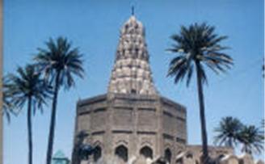 | Shaikh Omar Al-Sahra wardy Shrine: It is located in al-Shaikh Omar district, near al-Bab il-Wastany. The tomb of the ascetic Shaikh Shihab id-Din al-Sahrawardy, the well-known Sufi (mystic) cleric who died in (1225 AD), is shaded by a coned dome similar to Zumurrud Khatoon Dome. The mosque containing the tomb is one of the oldest mosques in Baghdad. | 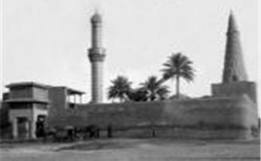 |
Religious Shrines in Al-Najaf |
| Imam Ali Shrine: Imam Ali Shrine, or Hadhrat Ali, is a religious tomb located in the city of an-Najaf. It contains the tomb of Ali ibn Abi Talib, the first of the Twelve Imams, followed by the Hadhrat Ali library, which includes several valuables and ancient manuscripts. Upon the martyrdom of Imam Ali in (40 AH), he had been buried next to the prophets Adam and Noah. Thereafter, this place has become the source of sciences and cultural and religious emanation for all the Arab and Islamic states. This holy locality, throughout its long history, also witnessed architectural episodes after discovering that Imam Ali is buried therein. Thus, Hadhrat Ali has been overtopped by the golden dome to suit the Imama’s immaculate sanctuary. For the time being, this dome evokes tranquility in the souls of Muslims who visit Imam Ali Shrine from all over the world. | 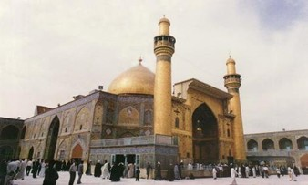 | The Shrine of Prophets Hud and Saleh: The Shrine of Prophet Hud and Prophet Saleh is located in Wadi al-Ghari (Wadi Es-Salam), currently an-Najaf Cemetery. Both are in one sanctuary locates beside an-Najaf Wall to the North-West of Imam Ali Shrine. Their shrine is visited by all Muslims from all over the world. | 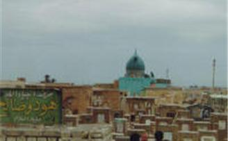 | Kamyl ibn Ziyad al-Nakh’iy Shrine: It is located in Al-Twayah (means the High Hill) district on the way from Kufa to Najaf. Currently, it is called Kamyl and visited regularly. | 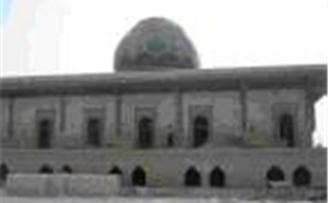 | Zain Al-‘Abidin Sanctuary: Zain al-‘Abidin is the epithet of Ali ibn Husayn ibn Imam Ali, whose sanctuary is located next to that of the lofty Sahabi Safi-Safa, opposite the Holy Imam Ali Shrine, and is visited regularly. | 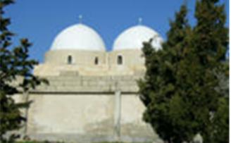 | Al-Hannana Mosque: Here is where the head of Imam Hussein and his family were placed while the caravan of Husayn’s family, after his martyrdom in Karbala (61 AH), passed through Kufa. This place has become a mosque for prayers and worship, and is visited regularly. | 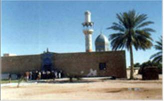 | The Shrine of Muslim Ibn Aqeel Ibn Abi Talib: This shrine is located beside the Mosque of al-Kufa, overtopped by a golden dome and visited by Muslims from all over the world. He is the first martyr, sent by Imam Hussein to Al-Kufa after the latter was demanded to come to al-Kufa. Muslim was martyred in al-Kufa in (61 AH) through a historically known battle with the Umayyad Wali. | 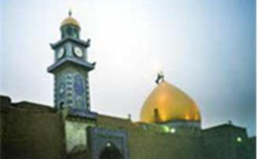 | The Shrine of Hany ibn ‘Urwa al-Murady Al-Math-heji: This shrine is located beside the Mosque of al-Kufa, opposite the Shrine of Muslim Ibn Aqeel. Hani ibn ‘Urwa was martyred in al-Kufa in 60 AH. He had been killed by Abdullah ibn Ziyad, leader of the Umayyad Army. | 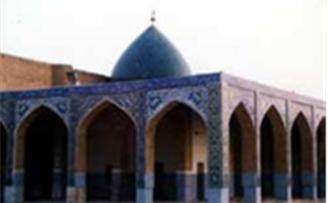 | The Shrine of Al-Mukhtar Al-Thaqafy: Al-Mukhtar ibn ‘Ubaida Al-Thaqafy had staged a revolution in al-Kufa to revenge al-Husayn on those who had killed him. His tomb is located in the Mosque of Al-Kufa beside the Shrine of Muslim Ibn Aqeel, which is attached to Al-Kufa Mosque. | 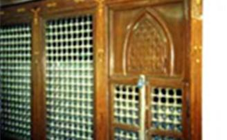 | The Shrine of the lofted Sahabi Maitham Al-Tammar: Maitham ibn Yahya al-Tammar, is a protector of Beni Asad (Asad Tribe). He, a virtuous cleric, is a comrade of Imam Ali. He was martyred in al-Kufa in 60 AH, murdered by Abdullah ibn Ziyad. His shrine, located to the west of the Mosque of al-Kufa on the Kufa-Najaf high road, is visited by Muslims from all over the world. | 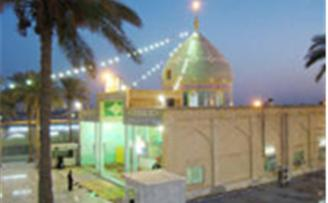 | Khadijah Bint Imam Ali Tomb: This tomb is located opposite the Mosque of al-Kufa. It is said that Khadijah, a small child, died during the time of Imam Ali, buried in this place and, in 1942, was built for her a dome, fence and a garden. | 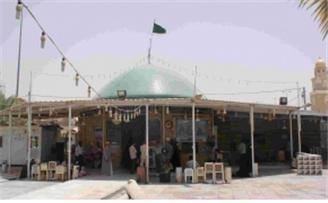 | Al-Emara House / The House of Imam Ali: It is located outside the Mosque of Al-Kufa, and was inhabited by Imam Ali during his reign. After his martyrdom, he was washed in this house. After several restorations, this house survives to this day. | 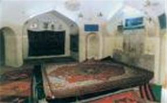 | Al-Kufa Mosque: It was first built by Adam, the Prophet of God. The Mosque, located in Al-Kufa, is flourished with many galleries and sanctuaries of prophets and holy-men, inter-alia, Imam Ali’s Dais and the oratory where he was martyred while praying the Fajr in the currently known as Imam Ali Sanctuary. | 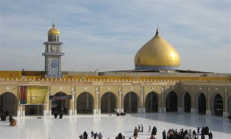 | Al-Sahla Mosque: Al-Sahla Mosque, formerly known as al-Bir Mosque, Abdul Qais Mosque and Beni Zafar Mosque, is located about 2 km to the northwest of the Mosque of al-Kufa. This Mosque includes many sanctuaries, such as Prophet Abraham Sancuary, Prophet Idris Sanctuary, Imam Zayn al-‘Abidin Sanctuary and the Sanctuary of the Redeemer Imam Mohammed ibn al-Hasan al-Askari. Muslims come to this place for prayers and du’a. | 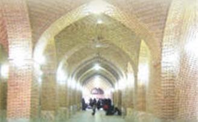 | The Shrine of Sayid Ibrahim ibn al-Hasan al-Muthanna ibn Imam Ali: This shrine is located in Hay Kinda close to the Najaf – Kufa high road. It is a sanctuary overtopped by blue dome and visited by Muslims. | 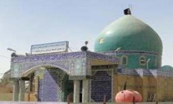
| | Nebi Yunus Sanctuary: On the banks of Al-Kufa River, Al-Hamra Mosques (the Muslims Treasury during the reign of Imam Ali) was built in perpetuation to the Prophet Jonah Sanctuary where he was threw by the whale. He remained there until his travel to al-Mosul and death there, where a big tomb was built for him. Clerics pray in this Sanctuary, including Al-Hamra Mosque, which visited by all Muslims. |
|
Religious Shrines in Karbala |
| Imam Hussein Ibn Ali Shrine: This holy shrine is located in the center of Karbala city, the Two Holy Mosques area. Imam Hussein Mosque is distinguished from other Holy Mosques by its wide nave and beautiful ornamented many Iwans. The nave area is (1500 m2). It has ten doors adorned by the attractive tiles of Karbala, these doors have local identifying names: Al-Qibla Door, Qazy Al-Hajat Door, Ali Al-Akbar Door, Al-Karama Door, Al-Nasiry Door, Al-Sultan Door, Al-Zaynabia Door, Ras Al-Husseinn (Hussein’s head) Door, Al-Durra Door, Al-Hussein Door. | 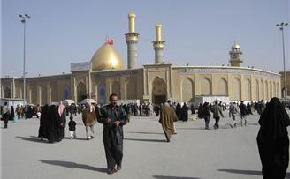 | Martyrs Shrine inside the Imam Hussein Mosque: Those who were martyred with Imam Hussein, in the Battle of Karbala with his family and comrades, are buried in a single tomb. The tomb is considered a mark to the place of their graves. It has two windows one of which faces the internal of the Mosque, the martyrs’ names are written thereon. | 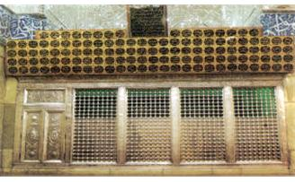 | The Shrine of Habib Ibn Muzahir Al-Asady: He is a brave leader who resided Al-Kufa, he followed the path of Imam Hussein and was martyred in the Battle of Karbala with the Al-Hussein’s comrades. He has a silver made shrine in the southern gallery of the Al-Hussein Mosque. | 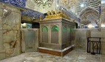
| The Shrine of Said Ibrahim Ibn Mohammed Al-Abid Ibn Imam Musa Ibn Jafar Al-Kadhim: This shrine is known, after a famous happening, as the al-Majab (the responsive). The bronze shrine is located in the western gallery. |  | The Shrine of the Said Al-Abbas Iibn Ali Ibn Abi Talib: This shrine is located in the center of Karbala city, (350 m) to the north of Al-Husayn Mosque. Al-Abbas Mosque is hardly distinguished from Al-Hussein’s Mosque as regard to art, architecture and splendor aspects. The marble tiled ground, mirror covered walls, sanctum, gallery, big Iwan, elevated minarets, high dome and marvelous box on the holy grave. The nave has nine doors: Al-Qibla Door, Imam Hasan Door, Imam Hussein Door, Sahib Azzaman Door, Imam Musa ibn Jafar Door, Imam Mohammed Al-Jawad Door, Imam Ali Ibn Mohammed Al-Hadi Door, Al-Furat Door and Al-Ameer Door. | 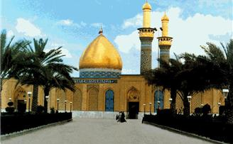 | Left Hand Sanctuary: This sanctuary represents the left hand of the Sayyid al-Abbas Ibn Ali, which was cut during the Battle of Karbala. The Sanctuary is located opposite Al-Abbas Mosque, separated by the main road. | 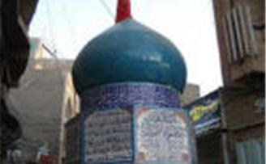 | Right Hand Sanctuary: This sanctuary represents the left hand of the Sayyid al-Abbas Ibn Ali, which was cut during the Battle of Karbala. The Sanctuary is located within Bab Al-Khan residence section, opposite Al-Abbas Mosque. | 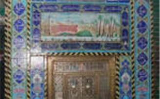 | The Shrine of Awan ibn Abdullah: This Shrine is located in Karbala suburbs, (11 km) to the Northwest, on Baghdad – Karbala high road, in a district named after the buried therein, Awan Ibn Abdullah, whose ancestry ends to the Imam Al-Hasan Ibn Ali Ibn Abi Talib. The Shrine is surrounded by a high fence and includes Iwans and rest places. | 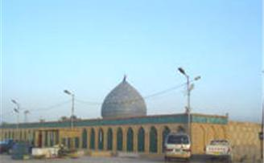 | The Shrine of Al-Hur ibn Yazid Al-Riyahi: Al-Hur is a comrade of and was martyred with Imam Al-Hussein. His Shrine is located about 9km to the west of Karbala, in Al-Hur district, named after him. The Shrine includes a silver window; its nave area is around (4000 m2) and has a high fence and many Iwans. | 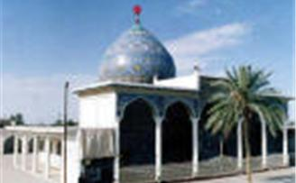 | The Shrine of Ibn Al-Hamza: The Shrine of Abu Mohammed Ali Ibn Hamza Al-Shaiba Iibn Al-Hussein Ibn Abdullah Ibn Al-Abbas Ibn Ali Ibn Abi Talib is located at the road leading to Al-Hindiya (Twayreej) district. The Shrine is around (200 m2) area, has a front side fence and surrounded by some houses and stores. | 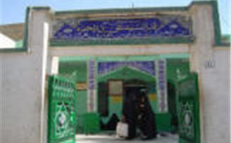 | Al-Mukhayam Al-Husseiny (The Husseiny Camp): It is wide place inside the city. It represents the place where Imam Al-Hussein had erected his camp with his family and comrades when they resided in Karbala in (61 AH). It is located in Al-Mukhayam section, near Al-Hussein Mosque. The Sanctuary has a very high fence adorned by the attractive tiles and includes many Iwans. | 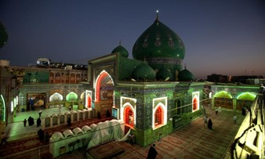
| Al-Zaynabiya Sanctuary: It is the place which was ascended by the Sayyida Zaynab Bint Ali Iibn Abi Talib, sister of Imam Al-Hussein, to call him before his martyrdom. The place is over a high hill directly opposite the Al-Hussein Mosque. Area of the Sanctuary is (150 m2). | 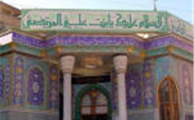 | The Sanctuary of Imam Al-Mahdy: Imam Al-Mahdy is the son of Imam Al-Hasan Al-Askary. His ancestry ends to Imam Al-Hussein. The Sanctuary is located at the beginning of Al-Sidra St. which leads to Al-Hussein Mosque. The Sanctuary has a wide area on Al-Husseiniya River and is surrounded by a high fence covered with the attractive tiles of Karbala. There are places for praying, for women and men. Also there is a main paved road leading to the Sanctuary. Many tourism facilities and casinos are located near it. | 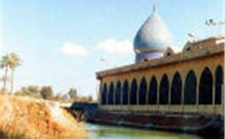 | The Shrine of Al-Akhras Ibn Al-Kadhim: The shrine of Mohammed Ibn Abi Al-Fat’h Al-Akhras, whose ancestry ends to Imam Mussa Ibn Jafar Al-Kadhim, is located in Al-Ebaiter province, a suburb of Karbala, about (13 km) from Karbala city center. Area of the shrine is (14 m2). | 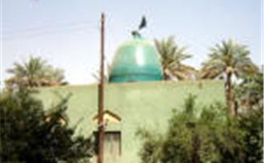 | The Sanctuary of Ali Al-Akbar Ibn Imam Hussein: This Sanctuary is located in (Aqd Al-Sada) residence area, on a narrow passageway between the old houses. | 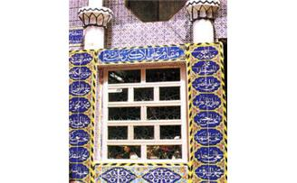 | The Shrine of Ibn Al-Hamza, styled ‘Abu Hashim’: He is Abdullah Ibn Al-Hassan Iibn Al-Abbas Ibn Ali Ibn Abi Talib. His shrine, located in Al-Hindiya district, (23 km) of Karbala city center, is composed of a wide nave, covered with blue ceramic and adorned with verses of the Holy Koran, and prying places for men and women. It is surrounded by two high fences, has two wooden doors and located on a paved main road. | 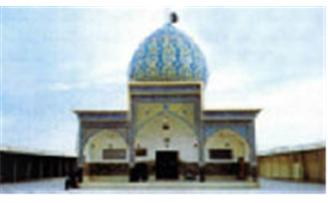 | The Shrine of Sayyid Ismail: The shrine of Sayyid Ismail, whose ancestry ends to the Imam Mussa Ibn Jafar Al-Kadhim, is located in agricultural area about 6 km from the city center. The shrine, of (225 m2) area, is visited particularly on Monday and Thursday every week. | 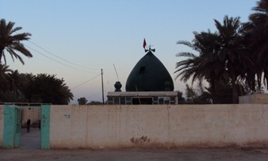 | The Sanctuary of Imam Jafar Al-Sadiq: This place is known as the sharia of Imam Jafar Al-Sadiq. It is the place where Imam Al-Sadiq washed in Euphrates before his visit to the Shrine of Imam Hussein. It is located behind the Sanctuary of Imam Al-Mahdy, there is a road connected them. | 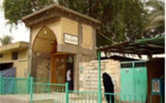 | The Sanctuary of Prophet Noah: It is located in Al-Ebaiter province – Al-Husseinya sub district of Karbala Governorate. |
|
Religious Shrines and Mosques in Babil | Al-Hilla City Center
- The Sanctuary of Imam Ali, The Scene of Red Al-Shams (Returning the Sun).
- The Shrine of the Sayyid Mohammed Al-Muntakhab Ibn Imam Ali Al-Hady.
- The Shrine of Ahmed Ibn Musa Al-Kadhim.
- The Shrine of Al-Jawad Ibn Musa Al-Kadhim.
- The Shrine of Sayyid Ali Ibn Tawoos.
- The sanctuary of Al-Mahdy.
| | Al-Kifl Sub District | - The Shrine of Prophet Al-Kifl.
- The Shrine of Nebi Ayoub (Prophet Ayoub).
- The Sanctuary and Birthplace of the Nebi Ibrahim (Prophet Ibrahim).
- The Shrine of Sayid Abu Bakr Ibn Ali Ibn Abi Talib.
- The Shrine of the Sayid Zaid Ibn Ali Al-Sajjad.
- The Shrine of the Sayid Abdullah Ibn Zaid.
| | Abi Gharaq Sub District | - The Shrine of the Sayida Sharifa Bint Al-Hassan.
- The Shrine of the Sayid Ismail Ibn Mussa Ibn Jafar Ibn Mohammed Ibn Ali Ibn al-Hussein Ibn Ali.
- The Shrine of the Sayid Idris Ibn Mussa Al-Kadhum.
- The Shrine of the Sayid Yasoob Al-Din Ibn Al-Kadhum.
| | Al-Sadda Sub District | - The Shrine of Banat (The Daughters of) Al-Hassan in Al-Mhannawiya area (the Sanctuary of the (Prophet Ibraham).
| | Al-Iskandariya Sub District | - The Sanctuary of Al-Khidr.
| | Al-Mahaweel District | - The Shrine of the Sayid Emran Ibn Imam Ali Ibn Abi Talib.
- The Sanctuary of Al-Khidr.
- The Shrine of the Sayida Hadiya Bint Imam Al-Hassan Al-Askary.
| | Al-Hashimiya District | - The Shrine of the Sayid Muhsen Ibn Imam Kadhum.
- The Shrine of the Sayid Ibrahim Ibn Imam Al-Ridha.
- The Shrine of the Sayid Ahmad Ibn Imam Al-Hassan.
- The Shrine of Banat (The Daughters of) Al-Hassan.
- The Shrine of the Sayida Hassna Bint Imam Al-Hassan.
- The Shrine of the Sayida Fatima Bint Imam Al-Hassan.
- The Shrine of the Sayid Saif Al-Din, a descent of Imam Mussa Al-Kadhum.
- The Shrine of the Sayid Ibrahim Ibn Mussa Al-Kadhum.
- The Shrine of the Sayid Al-Hasan Ibn Abdullah Ibn Al-Fadhl Ibn Al-Abbas Ibn Amirol Mo’minin.
| | Imam Al-Hamza Sub District | - Imam Hamza Al-Gharbi.
| | Al-Qasem Sub District | - Imam Al-Qasem Ibn Imam Mussa Al-Kadhum.
|
|